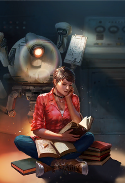

The state of the art Curie was designed to be the guardian of Vault 81, responsible for preserving the knowledge amassed by the Vault 81 scientists, as well as ensuring that every single one is aware of the significance of the mission undertaken within the halls of the vault. However, the current Curie is not the same robot as when she was deployed to the vault. Due to the overseer's sabotage, none of the science staff received a notification about the drill that would have allowed them to enter Vault 81 in time to carry out the experiment. However, three researchers showed up: Kenneth Collins and Jim Flint reached the vault from the Fens with the general population, while the overachiever M. Burrow was already on site. They reported to the research area and were sealed inside. This meant that the danger to the residential population still existed. The overseer personally sabotaged the delivery nozzles inside every residential quarter and room on their side of the vault. Then, when the researchers began to notice (Burrow, specifically), they disconnected the only terminal that could communicate with the science team and dumped it in the reactor chamber, near the sealed backup entrance into the science section. Sealed in the research wing, the scientists grimly continued their work, never to see the light of day again. Curie became their inheritor, watching as they fell one-by-one. Flint was killed when a mole rat named Clyde escaped his cage, while Collins and finally Burrow both died of old age. She interred them and continued the work.
Finally, in 2204, Curie finished the broad-spectrum cure that would be capable of curing every pathogen developed and analyzed in the captive mole rats. She spent the remaining time scanning the same four walls over and over again, until the Sole Survivor arrives, allowing her to exploit a loophole in her programming and escape from the bondage of the vault.